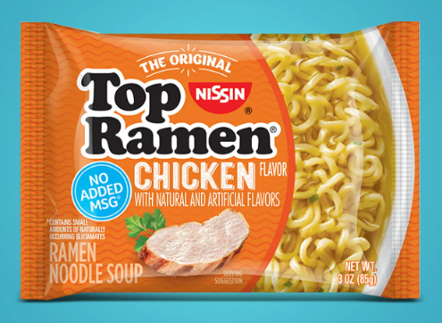
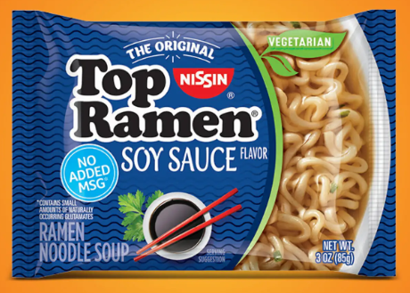
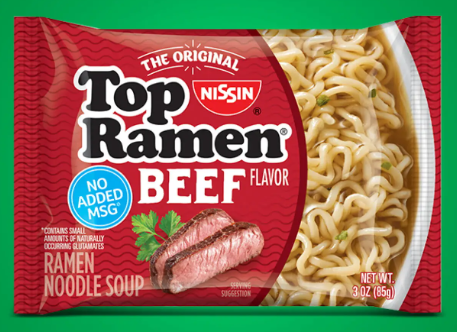
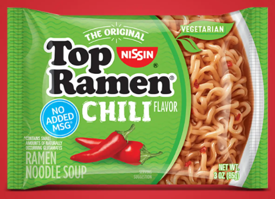
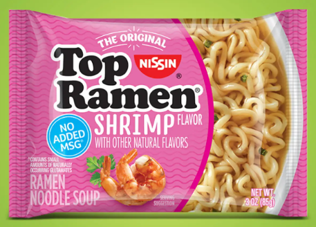

Chicken Flavor
Chicken is the most popular flavor of Top Ramen, and for good reason. It has a comforting, nostalgic, and reliable savory broth that works well on its own or upgraded with add-ons.

Chicken is the most popular flavor of Top Ramen, and for good reason. It has a comforting, nostalgic, and reliable savory broth that works well on its own or upgraded with add-ons.

Soy Sauce is a classic flavor of Top Ramen, known for its rich, umami-packed broth that provides a bold and satisfying taste experience.

Beef is a hearty and satisfying flavor of Top Ramen, known for its rich, savory broth that delivers a robust taste experience.

Chili is a spicy and exciting flavor of Top Ramen, known for its fiery heat and bold, aromatic broth that delivers a thrilling taste experience.

Shrimp is a delicious and aromatic flavor of Top Ramen, known for its sweet, succulent taste and fragrant broth that delivers a delightful seafood experience.